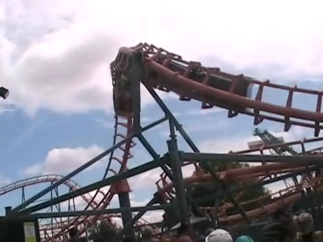
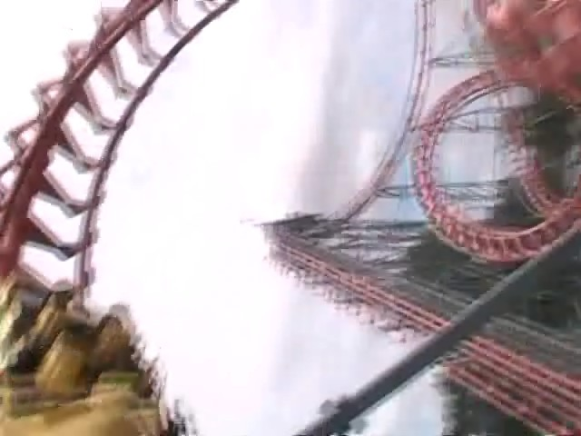

| |

Super Manège Review

For todays review, we're going to travel back in time to review Super Manège. The Vekoma Corkscrew that La Ronde used to have. So we pull down the OTSRs and away we go. The lifthill is quite slow, so it takes a little while to get to the top. Once you reach the top, you dip and go through the turn, and then, you go through the drop. The drop is not much, but it's fun. You get a small little pop of airtime there. You then rise up through another hill. Not much, but still fun. Then you start to go through a banked turn. This then leads us through the corkscrews. The corkscrews are fun, and a little disorienting, but they're still just corkscrews. Now with an Arrow Corkscrew, you'd be heading into the brake run right now, but Vekoma still has some tricks up it's sleeve. You then go up a curved hill. Now on most Vekoma Corkscrews, this caused us to lose all our speed, but we still have some here cause this was one of the faster Vekoma Corkscrews. We then cruise through some straight track. It's all calm, then we head down a small drop. This gives us a nice little pop of airtime, which is fun. We then head into another curve turn, except this time, we go through some strange turnaround type of element. The turnaround leads us past some straight track by the corkscrews. After a big cruiser turn, we glide straight into the brake run. I don't know where the painful ride rumor came in because Vekoma Corkscrews are fun and not painful. It's a shame that the Vekoma Corkscrew is becoming an endangered species, with them all dropping like flies. The only ones left are at what appear to be credit whore parks in France and Brazil, neither of which are top priority parks for me to get to any time soon. Can't say it's a real shame as....there are so many better rides out there than Vekoma Corkscrews (especially with Vekoma really cleaning up their game and designing what look like really good rides now). But they are fun rides. If you appear at either that park in France or Brazil, I'd give it a spin.
5/10
Location: La Ronde
Opened: 1981
Died: August 25, 2019
Built by: Vekoma
Last Ridden: August 2, 2011
I have ridden this exact same ride at the following parks.
Holiday Park
PNE Playland
Super Manège Photos


Home
|